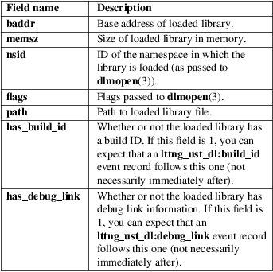

lttng-ust-dl − Dynamic linker tracing (LTTng−UST helper)
Launch your application by preloading liblttng-ust-dl.so:
$ LD_PRELOAD=liblttng−ust−dl.so my−app
When the liblttng-ust-dl.so library is preloaded before a given application starts, it causes all calls to dlopen(3) and dlclose(3) in said application to be traced with LTTng−UST (see lttng-ust(3)).
See lttng(1) to learn more about how to control LTTng tracing sessions.
Important
This LTTng−UST helper can also emit shared library
load/unload events (see Shared library load/unload
tracking in lttng-ust(3)). You should NOT use the
event records generated by this LTTng−UST helper
(prefixed with lttng_ust_dl:) to track the loading
and unloading of shared libraries, especially in situations
where a dynamically loaded library loads its own
dependencies. Instead, do preload liblttng-ust-dl.so,
but use the shared library load/unload event records, which
are more reliable, for your tracking analysis.
The following LTTng−UST events are available when using this library.
lttng_ust_dl:dlopen
Emitted when dlopen(3) is called.
Fields:
lttng_ust_dl:dlmopen
Emitted when dlmopen(3) is called.
Fields:

lttng_ust_dl:dlclose
Emitted when dlclose(3) is called.
Fields:
lttng_ust_dl:debug_link
Emitted when debug link information is found when loading a library with dlopen(3). See Debugging Information in Separate Files <https://sourceware.org/gdb/onlinedocs/gdb/Separate-Debug-Files.html> for more information about debug links.
Fields:
lttng_ust_dl:build_id
Emitted when a build ID is found when loading a library with dlopen(3). See Debugging Information in Separate Files <https://sourceware.org/gdb/onlinedocs/gdb/Separate-Debug-Files.html> for more information about build IDs.
Fields:
If you encounter any issue or usability problem, please report it on the LTTng bug tracker <https://bugs.lttng.org/projects/lttng-ust>.
• LTTng project website <http://lttng.org>
• LTTng documentation <http://lttng.org/docs>
• Git repositories <http://git.lttng.org>
• GitHub organization <http://github.com/lttng>
• Continuous integration <http://ci.lttng.org/>
• Mailing list <http://lists.lttng.org> for support and development: lttng-dev@lists.lttng.org
• IRC channel <irc://irc.oftc.net/lttng>: #lttng on irc.oftc.net
This library is part of the LTTng−UST project.
This library is distributed under the GNU Lesser General Public License, version 2.1 <http://www.gnu.org/licenses/old-licenses/lgpl-2.1.en.html>. See the for more details.
Thanks to Ericsson for funding this work, providing real−life use cases, and testing.
Special thanks to Michel Dagenais and the DORSAL laboratory <http://www.dorsal.polymtl.ca/> at École Polytechnique de Montréal for the LTTng journey.
LTTng−UST was originally written by Mathieu Desnoyers, with additional contributions from various other people. It is currently maintained by Mathieu Desnoyers <mailto:mathieu.desnoyers@efficios.com>.
lttng-ust(3), dlopen(3), lttng(1)